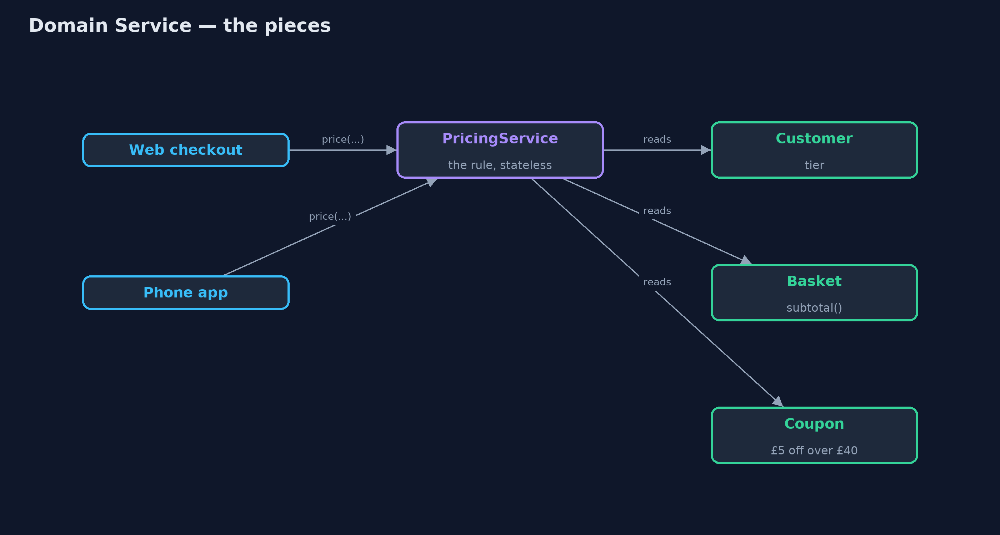
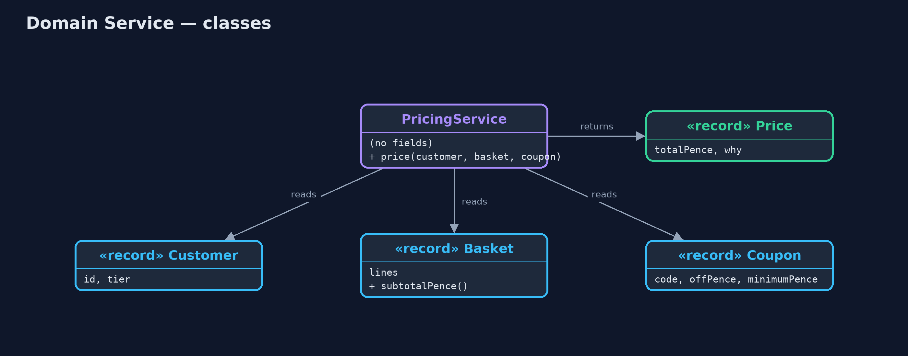
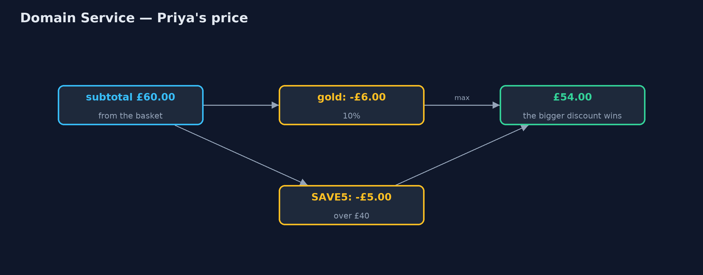
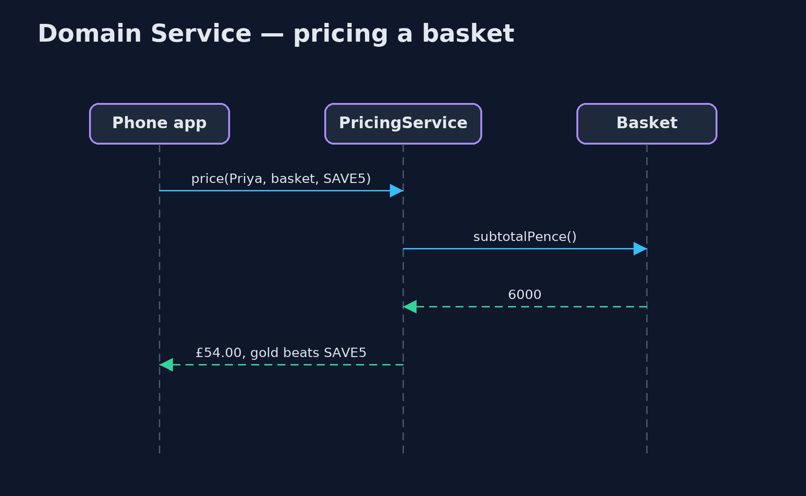

Domain Service Pattern
src/main/java/com/jk/explore/domainservice/
├── Copies.java Without the pattern: the pricing rule written inside each place that needs it
├── DomainServiceDemo.java The five acts: the rule copied into two places, a domain service, the rule in the shop's words, many cases one service, and the bill
├── Model.java The domain objects the pricing rule needs
└── PricingService.java The pattern: a business rule that involves several domain objects and belongs to none of them, in its own stateless classWhen a business rule involves several domain objects and belongs to none of them, give it its own stateless class in the domain, named in the business's own words.
Domain Service is one of the building blocks of domain-driven design. Most business rules belong on an entity or a value object: a basket knows its own subtotal. But some rules involve several objects at once and are not naturally the job of any one of them, such as "a gold customer's discount and a coupon do not add up; the bigger one wins", which needs the customer, the basket and the coupon.
Such a rule gets its own class: a domain service. It holds no data of its own, is named in the business's language, and lives in the domain, so every part of the program that needs the rule uses the same one.
The idea in everyday terms
Think of a referee at a football match. Whether a tackle was a foul involves two players and the rules of the game. Neither player gets to decide, and the decision is not part of either of them. The referee holds no score of their own; they apply the rules, the same way, every time, whoever is playing.
The scenario
The online store gives gold customers 10% off, and offers a coupon, SAVE5, worth £5 off baskets over £40. The rule is that the two do not add up: the bigger discount wins. The web checkout and the phone app each had their own copy of that rule, and the app's copy was older and added both.
Run
./gradlew runThe demo tells the story in 5 acts, each printing exact numbers that the tests check:
| Act | What it shows |
|---|---|
| 1. The rule, copied twice | Gold customer, £60 basket, SAVE5: the web says £54.00, the phone app's older copy says £49.00. |
| 2. A domain service | PricingService holds the rule once; web and app both call it and both say £54.00. |
| 3. In the shop's words | The service explains itself: subtotal £60.00; gold 10% -£6.00 beats SAVE5 -£5.00. |
| 4. One service, every case | One stateless service prices five cases: £60.00, £55.00, £54.00, £54.00, and £30.00 for a basket under the coupon minimum. |
| 5. The bill | The basket keeps its own subtotal; moving that into a service too would leave a bag of data. |
Test
./gradlew test5 tests in DemoRunsTest, PricingServiceTest. Every number the demo prints is asserted, and nothing depends on the clock, so every run gives the same result.
Technologies and versions
| Technology | Version | Used for |
|---|---|---|
| Java | 21 | the code (toolchain set in build.gradle) |
| Gradle | 9.2.1 (wrapper) | build and run, nothing to install |
| JUnit | 5.10.2 | the tests |
| videokit | repository tool | the narrated video and animation: Piper en_US-amy-medium, speed 0.8, longer pauses (the approved amy-slow voice) |
Learning Material
| Document | What it is for |
|---|---|
| Problem statement | the situation and what the project must show |
| Prerequisites | what you need to know first |
| Domain Service, explained | the acts in prose |
| Session guide | a one-hour lesson with exercises |
| Animated walkthrough | the acts step by step, narrated |
| Spec | what this project must be true of |
The pattern in one picture
Both front ends call one rule, which reads three domain objects.

Where each piece sits
The service has no fields; the domain objects keep their own facts.

How the data moves
Two discounts computed, the bigger one applied.

Who calls whom, in order
The service asks each object for its own facts.

Video
video/domain-service-pattern-explained.mp4 (with .m4a audio and .srt subtitles) is built by video/build_video.sh. Rendered media is not committed.
What it costs
- Services can empty the objects. Moving every rule into services leaves entities as bags of data with no behaviour.
- One more place to look. A developer must know the service exists to find the rule.
- The name matters. A vague
PricingManagerorOrderHelpersoon collects unrelated code.
When this is too much
When a rule belongs to one object, keep it there: the basket's subtotal belongs to the basket. Domain services are for rules that genuinely span several objects. And they are not application services: a domain service holds business rules, not steps like "load, call, save, send email".
Where you have already met this
- Pricing, tax and shipping calculators that take several objects.
- Transfer services that move money or stock between two entities.
- Classes named after a business activity:
PricingService,RefundPolicy.
Where this sits
This project is in domain-driven-design-patterns, next to Entity and Value Object, which hold the rules that do belong to one object.